Instalação Emmi
A Emmi conta com instalador simples e objetivo, neste passo a passo você irá ver como é fácil instalar a Emmi em seu HD.
Para iniciar o processo de instalação vamos clicar no ícone Instalar Emmi Linux.
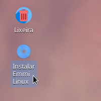
Feito isto vamos selecionar a Linguagem, em nosso caso selecionamos Português do Brasil.
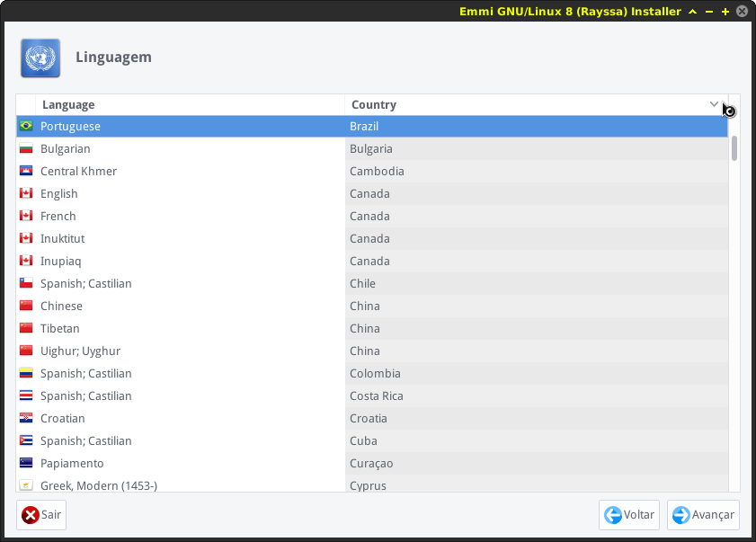
Agora vamos selecionar a nossa Timezone, selecionamos America/São_Paulo
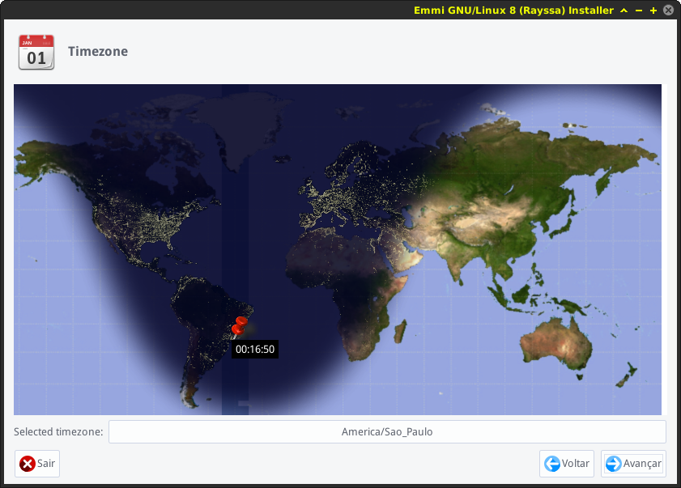
Agora vamos selecionar o Layout do Teclado,Selecionamos Português.
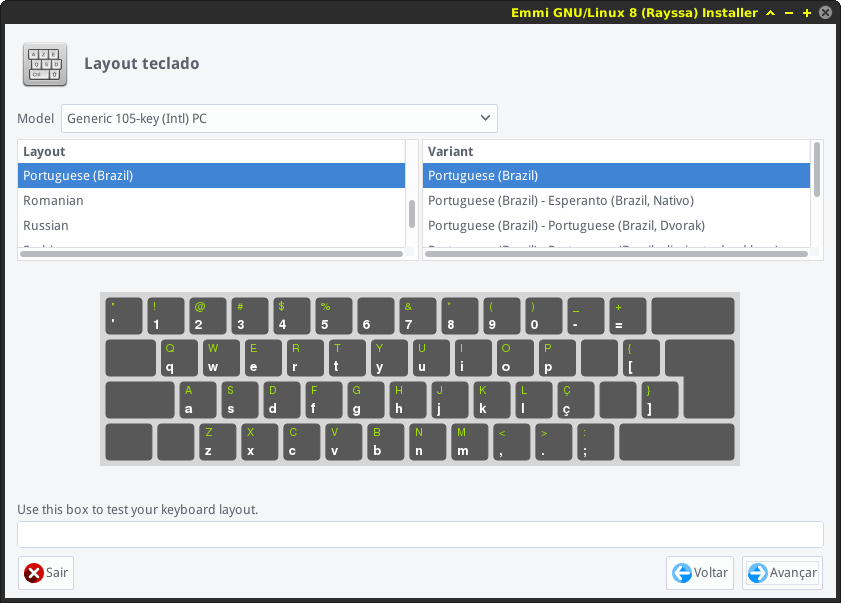
Agora o Preencha suas informações, como Nome, Nome do usuário, Senha.
Caso você queira que o sistema faça login automaticamente, sete o Automatic Login.
Caso contrário deixe desmarcado.
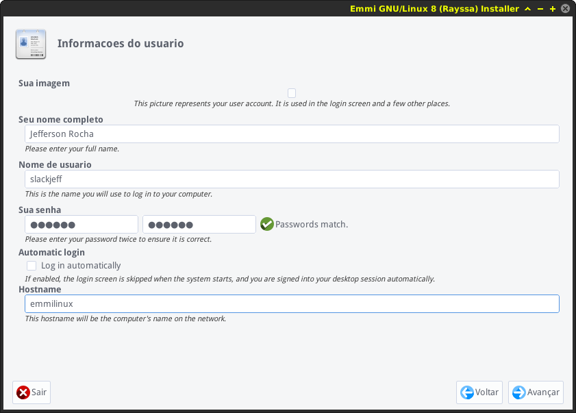
Agora vem a parte do particionamento.
Não se preocupe, está parte é muito fácil, vamos clicar em Editar Partições, para começar a particionar o HD.
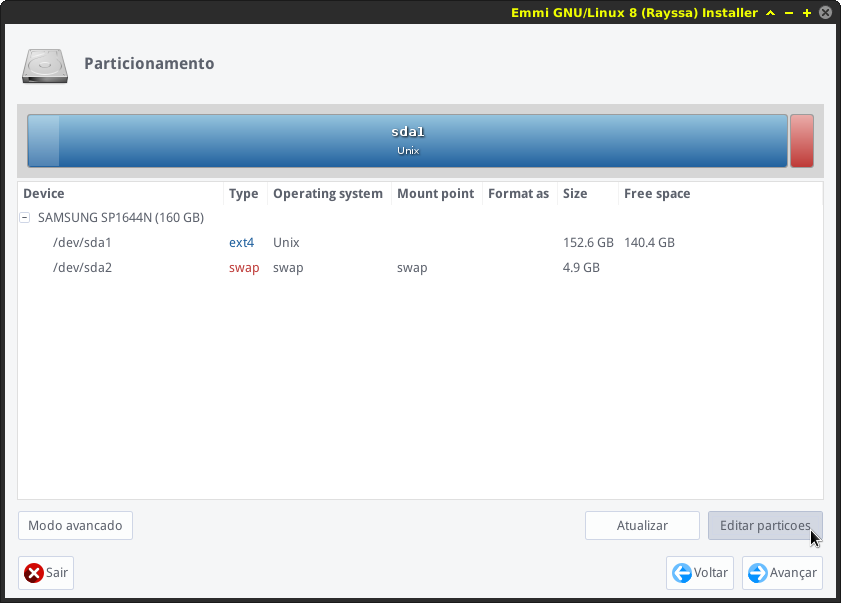
O Gparted será aberto.
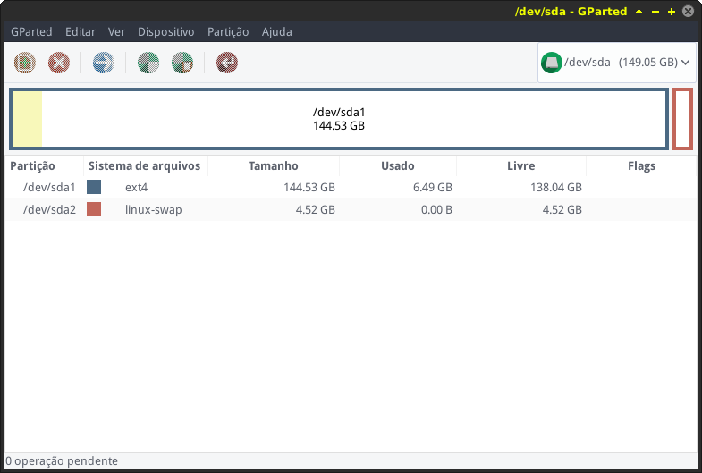
Caso você deseja sobrescrever a Emmi em seu HD, exclua o sistema de seu HD, em nosso caso temos 2 partições que são quase padrões.
A partição Raiz /
E a partição Swap
Vamos excluir as duas partições, click com o botão direito do mouse e selecione a opção Excluir como feito abaixo.
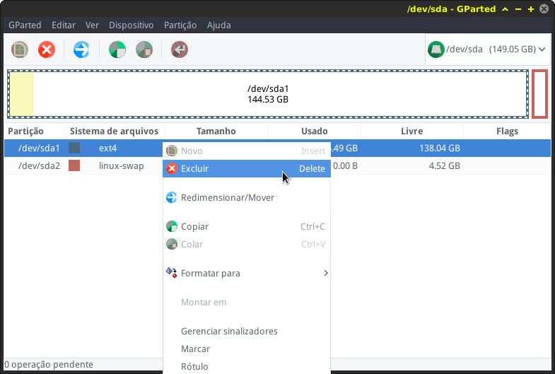
Agora vamos criar novas partições, vamos utilizar 2 partições, a partição Raiz e partição Swap
Para isso vamos clicar no espaço Não alocado com o botão direito do mouse e clicar em Novo e aplicar, na flexa vermelha localizada no menu superior.
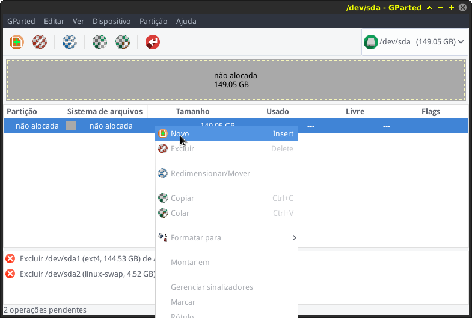
Pronto, as novas partições estão criadas e formatadas, agora vamos prosseguir com a instalação.
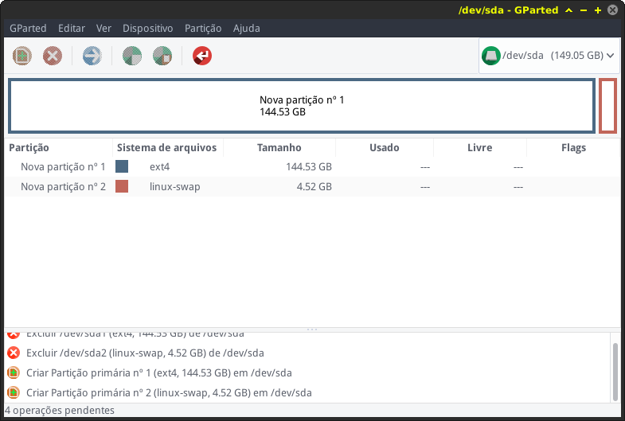
Voltamos a tela do particionamento, agora vamos indicar para o instalador aonde ficará a raiz do sistema /
Em nosso caso é o Sda1.
Click com o botão direito do mouse para abrir o menu.
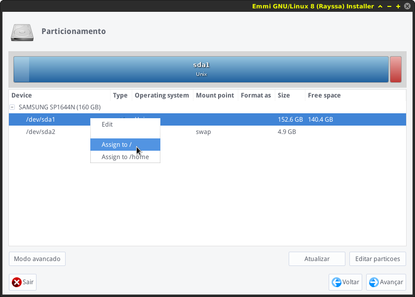
Opção do bootloader, deixe o padrão.
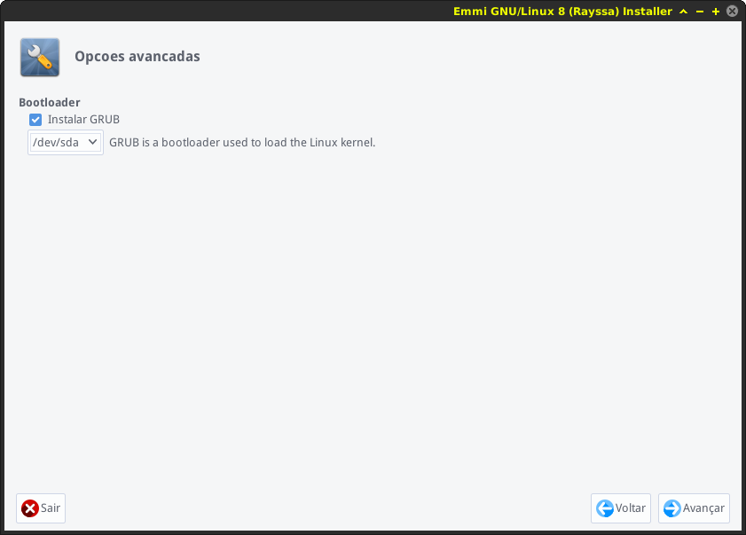
Confira nesta tela de resumo se as informações estão todas corretas.
Se sim, click em Aplicar.
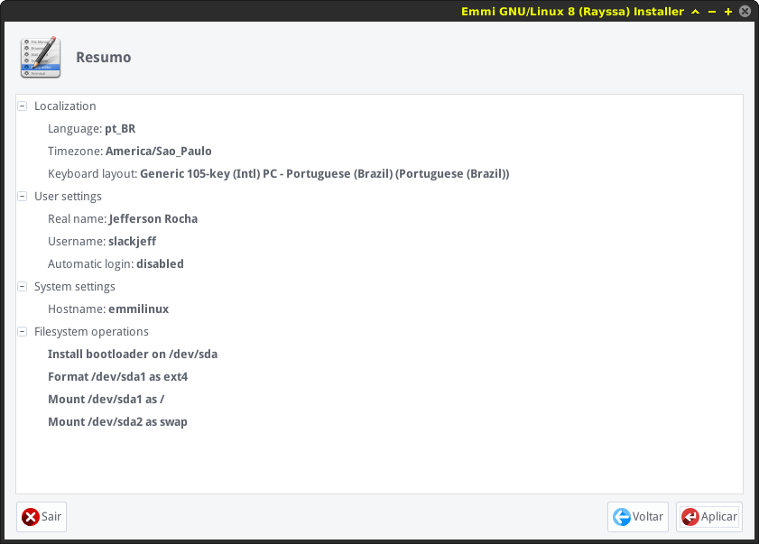
A instalação vai começar, o processo demora em torno de 3 a 8 minutos para ser concluída, dependendo do seu Hardware.
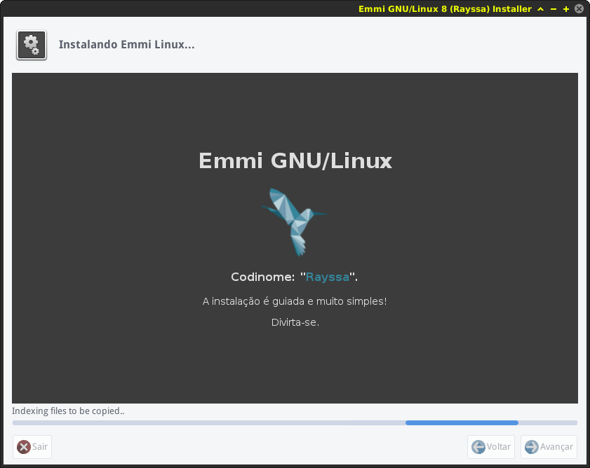
Processo concluído, retire a mídia live e reinicie seu computador
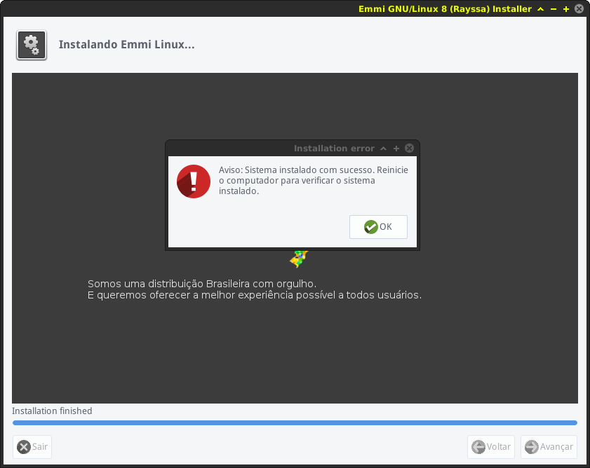
Agora é só aproveitar